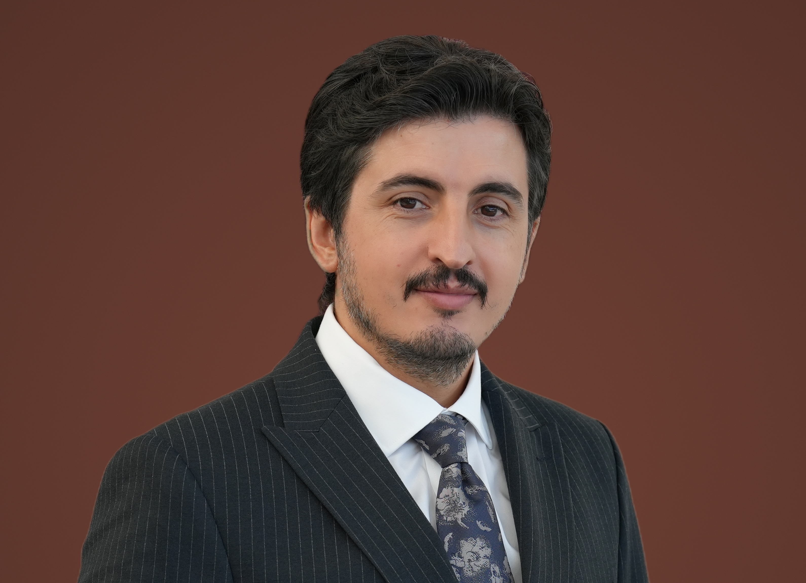

Ömer Akyıldız
Economic historian
I am an economic historian of the late Ottoman Empire. My research examines state capacity, bureaucratic institutions, labour markets and human capital.
Using quantitative methods and large-scale historical datasets, I study institutional transformation, public employment, wage structures and career mobility during Ottoman modernisation.

Research interests
- Economic history
- Bureaucratic institutions
- Ottoman state capacity
- Historical labour markets
- Human capital
Research
Google ScholarJournal articles
-
2026
Son Dönem Osmanlı Bürokrasisinde Himaye ve Kariyer: Posta ve Telgraf Nazırı Hasan Ali Efendi ve Oğulları
Patronage and Career in the Late Ottoman Bureaucracy: Minister of Posts and Telegraphs Hasan Ali Efendi and His Sons
- 2026
-
2026
Osmanlı Memurlarının İncelenmesinde Büyük Veri
Big Data Approaches to the Study of Ottoman State Officials
Current research
Pricing Human Capital in a Modernizing State: Education and Skill Premia in the Ottoman Civil Service
Working paper
State Capacity Paradox: Can State Expansion Empower Political Opposition?
Manuscript under review
Book chapters & other writing
- 2021
-
2021
Umurfakı Kazası Örneğinden Hareketle Osmanlı Balkanlarında Zirai Sektörün Ticarileşebilme Olanakları Üzerine Bir İnceleme (1844–45)
-
2015
Bir İktisat Tarihçisi: Mehmet Genç
-
2014
Sezai Karakoç’ta İslam ve İktisat
Academic background
Download CV (PDF)Appointments
2025–2026
Postdoctoral Visiting Scholar
Department of Economics, University of Connecticut
2020–2023
Lecturer
Balkan Research Institute, Trakya University
Education
2018–2024
PhD in Economic History
Marmara University
2016–2018
MA in History
University of Leicester
With Merit
2010–2012
MA in Economic History
Marmara University
Ranked first in the programme
2005–2009
BA in Economics
Marmara University
Talks & conferences
Selected presentations and invited talks.
Middle and Lower Ranking Officials: Postal and Telegraph Employees in the Ottoman Empire
BİSAV, invited talk
Ottoman State Capacity: Postal and Telegraph Network Expansion (1840–1910)
New Perspectives on Middle Eastern Economic History, Industrial History Review online workshop
Event detailsBeyond Birthplace: Geographic Mobility during Ottoman Modernization
Middle East Studies Association (MESA), Washington, DC. Panel: Borderlands and Belonging: Conflict and Mobility in the Modern Middle East
Transforming Sicill-i Ahvâl Registers into Structured Data: A Data-Mining Approach to Ottoman Civil Servants
Digital Humanities Meetings (DBB-21), Marmara University Digital Humanities Research Center, invited online talk
Ottoman Civil Servants in the Age of Modernization: An Empirical Analysis of Postal and Telegraph Employees
Müktesebat Meetings 43, Media Literacy Association, invited online talk
Academic service
Co-organiser of Medrese Talks (2023–2024), an international online lecture series on Islamic and Ottoman intellectual history at the Fatih Sahn-ı Semân Education and Research Center.
Organising committee member for the Medrese and Ulema Studies training programmes in 2020 and 2021.
Contact
For academic correspondence, please email me.